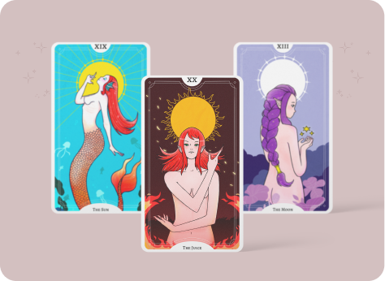
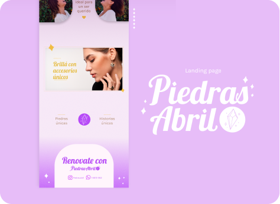
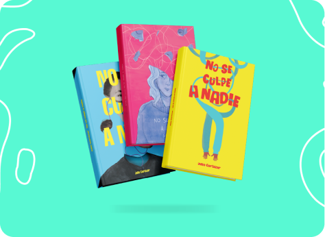
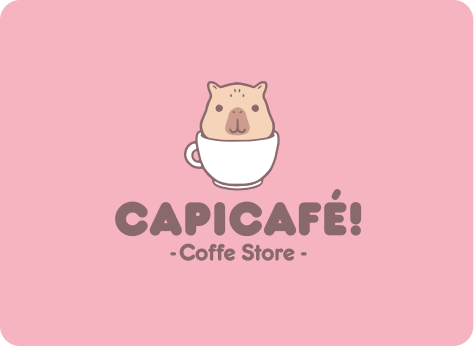
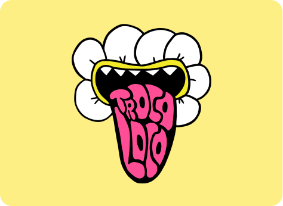
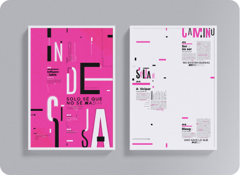
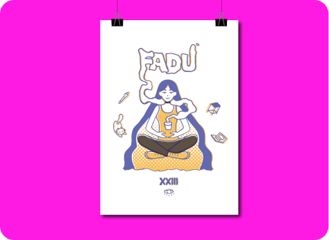
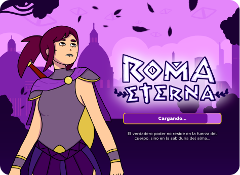

Home
Servicios
Proyectos
Contacto
Blog
Mis proyectos

Cartas del Tarot

Landing Page - Piedras Abril

Diseño de Libros

Branding - CapiCafé

TrocoLoco

Poster Tipográfico

Serigrafía

Diseño de Videojuegos
Diseño de Vinilo